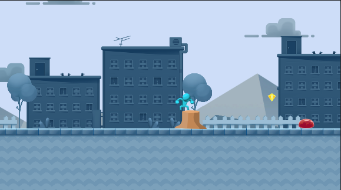
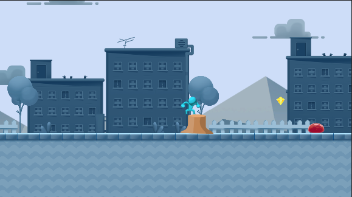

Caderno Digital
João Costa — Desenvolvimento de Jogos — IPMAIA 2021/22
Descrição de um jogo
Hollow Knight foi uma joia coberta de terra para mim. Há uns anos atrás, sem que tivesse ouvido quaisquer notícias sobre este jogo, um dia os meus canais de jogos e "lets-players" no Youtube apresentavam todos vídeos do Hollow Knight. De um dia para o outro, eu obtive imensa — até demasiada — informação acerca deste jogo. Sim, "demasiada informação" é a devida expressão a usar. Hollow Knight é o tipo de jogo que tem que se experienciar pessoalmente, não por vídeos na Internet.

Sendo um "metroidvania", o mundo do Hollow Knight é extenso e recheado de ambientes criativos e histórias interessantes. Os géneros principais incluem ação, aventura e "platforming". E, de facto, o jogo pronuncia-se perfeitamente em cada um e de forma equilibrada:
- Os inimigos são diversos e com caraterísticas que bem refletem o ambiente onde se encontram. O Knight apresenta um conjunto de ataques limitado, mas que se vai expandindo e melhorando ao longo do jogo. Isto fornece ao jogador o tempo necessário para dominar os controlos básicos e adaptar-se aos inimigos mais fáceis, oferecendo depois novas habilidades e desafios com o seu progresso pelo jogo;
- A história do mundo é desvendada pela exploração do jogador e pelas conversas com as personagens peculiares. Apesar de não ser essencial para o progresso do jogo, a existência destas informações estabelece uma autenticidade ao mundo e incentiva a exploração dos jogadores interessados;
- Os desafios de "platforming" são semelhantes ao combate, limitando-se pelo conjunto inicial de movimentos do jogador e aumentando a dificuldade quando se obtém mais habilidades. Os desafios mais difíceis requerem o uso sequencial e repetido dos diferentes movimentos obtidos, incluindo um clássico duplo salto e um salto baseado nos ataques normais da espada do Knight sobre inimigos e obstáculos.
O mundo do Hollow Knight consiste de um reino decaído, ocupado por diferentes espécies de insetos. A personagem do jogador — simplesmente conhecido como o Knight — entra no reino por terras selvagens. Deparando-se com vários outros insetos ao longo do jogo, o Knight aprende que o reino caiu devido a uma infeção que rouba a inteligência dos insetos, controlando-os através dos seus instintos mais básicos. O rei destes insetos, o qual está desaparecido, terá solicitado o auxílio de um dos seus soldados — o Hollow Knight — para derrotar e conter a fonte da infeção. No entanto, esta solução não resolveu o problema. E agora, a infeção ameaça libertar-se do Hollow Knight e controlar os insetos do reino outra vez.
Claro que isto não seria uma análise do Hollow Knight se não mencionasse as artes. O design das personagens e dos ambientes apresenta cada um de uma forma única. Praticamente todas as personagens são memoráveis não só pelo seu papel no jogo, mas também pela sua forma e pelo seu estilo, os quais refletem imensamente bem as suas caraterísticas e peculiaridades — por vezes, de forma cómica. Os ambientes contêm paletas de cores variadas e, quase sempre, de cores vivas, estando os níveis recheados de objetos cenográficos que, sendo por vezes simplistas, ainda caracterizam imenso o mundo. Por sua vez, a banda sonora não é feita de simples músicas — são autênticas sinfonias. Esta é, de longe, uma das melhores bandas sonoras que já alguma vez ouvi num jogo. Cada ambiente e "boss" pode ser facilmente identificado apenas pela sua melodia, pois a banda sonora foi um outro instrumento usado na realização do mundo do Hollow Knight, apresentando uma qualidade deveras magnífica.
Unity: Tutorial de Karts
Unity: Tutorial de First Person Shooters
Unity: Tutorial de 2D Platformers
Nestas aulas, o projeto usado não se encontrava na secção "Learn" do Unity Hub. Em vez disso, tive que criar um novo projeto, na secção: "Projects" → "New".
O primeiro passo do tutorial foi a experimentação do jogo. Este aparenta ser bastante simples: o jogador apenas consegue mover a personagem principal e fazê-la saltar; os inimigos são umas gomas que rastejam no chão e que podem ser derrotadas com um salto nas suas cabeças; o jogador perde o jogo se levar qualquer tipo de dano, quer pelos inimigos, quer por cair fora do nível.
A primeira alteração que eu fiz foi a adição de um tronco de uma árvore (localizado em "Mod Assets" → "2D Props"). Para que este objeto colidisse com o jogador, adicionou-se um componente "Box Collider" ao tronco. No entanto, este não funcionou, pois o Unity diferencia entre os "colliders" 3D e os 2D. Como tal, troquei os componentes e ajustei o tamanho da caixa, para corrigir a distância de colisão entre o jogador e o tronco. O jogador era agora impedido de andar através do tronco e podia saltar para cima dele.
 

Trabalho Prático 1
Como o objetivo deste trabalho consiste na criação de um novo nível, considerei utilizar o "GameKit" que proporcionasse a maior facilidade na construção de novas partes da cena, mantendo um nível adequado de versatilidade. Por essas razões, para a realização deste trabalho prático, o "GameKit" escolhido foi o Karting Microgame.
Ideias iniciais para o Karting Microgame:
- Faixas de pista divididas, preferencialmente com diferentes graus de dificuldade;
- Saltos com rampas/precipícios;
- Pontes;
- Loops;
- Melhorar o sistema de "checkpoints": "checkpoints" ordenados, o jogador só pode acabar a corrida na meta, etc.;
- Implementação de um salto controlado pelo jogador.
O início do desenvolvimento começou pelo fim da pista e pelas primeiras ideias que tive para este projeto. Eu queria que a pista começasse de maneira simples, pelo que a divisão das faixas foi reservada para o fim da pista. Para criar uma diferença de dificuldade entra as novas faixas, iriam-se usar faixas inclinadas, no sentido de desequilibrar o controlo do jogador sobre o seu carro.
Começou-se por criar uma rampa que guiasse o jogador para a pista elevada, a qual seria mais curta, mas difícil. Para tal, alargou-se a faixa original do "GameKit" de uma forma brusca e crude, através do simples aumento da escala axial da faixa original. Depois, adicionaram-se dois segmentos de rampas pré-fabricados, com um desvio de inclinação de 30° — especificamente, usou-se um segmento na entrada da rampa e outro na saída, para manter o início da pista elevada nivelado.
Eventualmente, notei que as curvas podiam ser usadas para diminuir a largura das seguintes faixas da pista com um aspeto natural. Aumentando ou diminuindo a escala de uma das dimensões da faixa curva, a entrada/saída desta faixa pode ser redimensionada sem que a outra ponta da faixa sofra alterações.
A saída da pista elevada tirou partido da minha segunda ideia para este projeto: um precipício. Em vez de criar uma outra rampa tão perto do final do circuito, decidi que seria mais fácil e mais divertido ter um pequeno salto para se sair da pista elevada. As faixas desta pista provaram-se difíceis de se apontar para a faixa no chão. Para se contornar este problema de uma forma subtil, usou-se o truque da alteração da escala axial de uma curva.
 da pista elevada para a pista no chão")